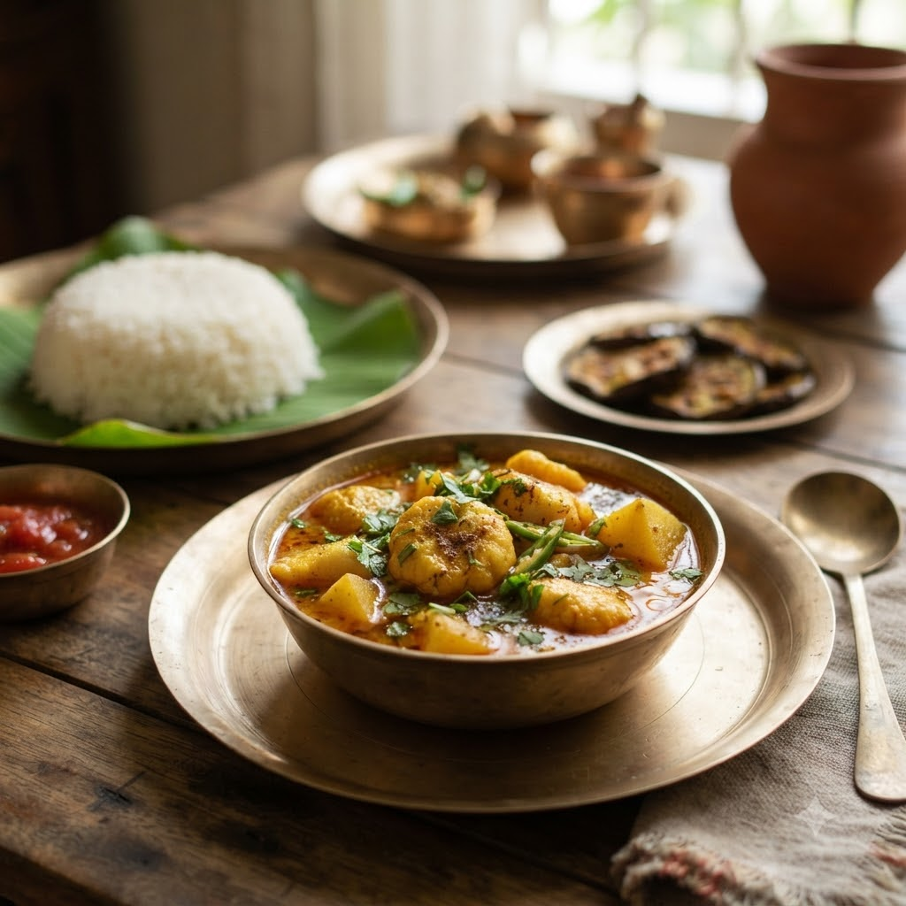

Chhanar Dalna (Bengali Paneer & Potato Curry)

Chhanar Dalna (Bengali Paneer & Potato Curry)
Chef Magic – Sauté + Boil Auto 26 min — Serves 4
Gluten-Free • Vegetarian • Bengali • High-Protein
🧑🍳 Chef Magic🍽 Serves 4
Ingredients
- 250g paneer, cubed
- 2 potatoes, cubed
- 1 tsp cumin seeds (jeera)
- 1 bay leaf (tej patta)
- 1/2 tsp turmeric (haldi)
- 1 tsp cumin (jeera)-coriander powder (dhania powder)
- 1/2 tsp garam masala
- 2 tbsp mustard oil (sarson ka tel)
- Salt & sugar to taste
- Chopped coriander (dhania) to garnish
Method
1Add mustard oil to the jar; select Sauté (Speed 2–4, ~130–160°C) and lightly fry the paneer cubes for 3 minutes until golden; remove and set aside.
2Add cumin seeds and bay leaf to the same jar; sauté until fragrant, then add potatoes and turmeric; sauté 5 minutes.
3Add cumin-coriander powder, salt, a pinch of sugar and a little water; select Boil (Speed 1–2, 100°C) and cook until potatoes are tender.
4Return the paneer to the jar with garam masala; simmer on Sauté (Speed 1–2, ~100–110°C) for 3 minutes. Garnish with coriander.
Tip: A pinch of sugar is traditional in Bengali paneer curries — it rounds out the mustard oil’s sharpness.